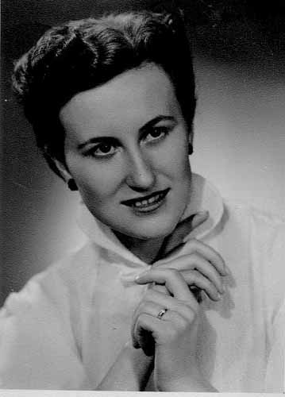
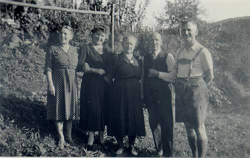
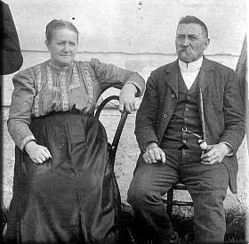
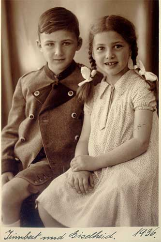
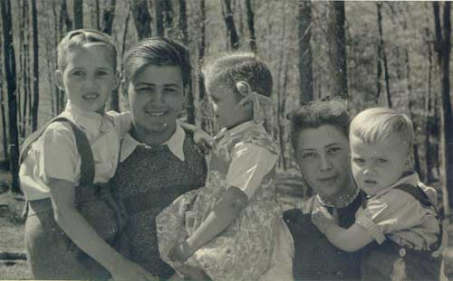
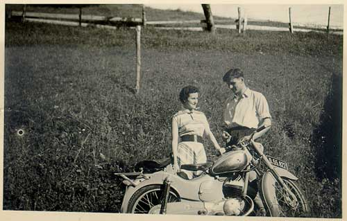
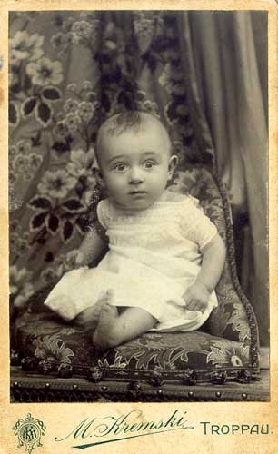
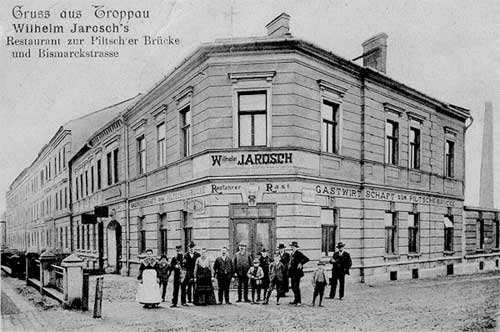
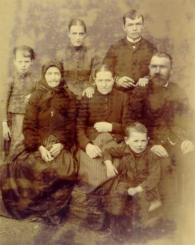
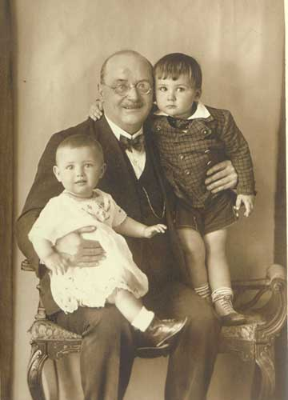

Bildergalerie
Hier habe ich nochmals alle Personenfotos - getrennt in Mütterlicherseits und Väterlicherseits - zusammengefasst.
Mütterlicherseits:

Erna VORDERWINKLER (verh. PATSCHEIDER) 1931-1984
Erna VORDERWINKLER als Kind - Foto im Jänner 1935
{kind=link}

Erna VORDERWINKLER - Foto Herbst 1942 (also 11 Jahre alt)

Erna VORDERWINKLER - Foto vom 20.3.1944 (also knapp über 12 Jahre alt)

Erna VORDERWINKLER mit Freundin Adele SCHWARZ

Erna VORDERWINKLER (verh. PATSCHEIDER) 1931-1984
{kind=link}
vlnr: Tochter Susanne und Gatte Irimbert und Erna
{kind=link}

Hochzeit Erna und Irimbert PATSCHEIDER in Christkindl
Erna mit Tochter Susanne PATSCHEIDER - Foto ca. 1972
{kind=link}

Erna VORDERWINKLER
(verh. PATSCHEIDER) 1931-1984
Erna VORDERWINKLER
(verh. PATSCHEIDER) 1931-1984
{kind=link}
{kind=link}

Rosa und Ludwig VORDERWINKLER in Unterdammbach

Ludwig und Rosa VORDERWINKLER mit Enkelkind Wolfgang (ich)

Ludig VORDERWINKLER als Kavallerist in der Kaserne Enns
Führerscheinfoto von Ludig VORDERWINKLER
{kind=link}

Familienfoto der VORDERWINKLER nähe Letten (1910)

Ludwig VORDERWINKLER (Sen.) und Maria Mayr - Sommer 1932

Goldene Hochzeit am 9.9.1951 VORDEWINKLER Ludwig und Maria
{kind=link}

Theodor VORDERWINKLER 1902-1931
Maria Winzer 1897-1983 (unsere Linzer Tante Mitzi)
{kind=link}
Maria VORDERWINKLER 1906-2004 und Anton MANN
{kind=link}
Maria und Anton Mann mit Pflegekind Hanni Dusch aus Holland
{kind=link}

Maria VORDERWINKLER (MANN) an ihrem 90. Geburtstag im Altenheim Enns

Hedwig SCHARL und Moritz MAYR - meine UrUrgroßeltern - Eltern von Mayr Marie
{kind=link}

Anna ÖLLINGER (*1870) Meine Urgroßmutter
Väterlicherseits:

Irimbert PATSCHEIDER 1928-1995 (mein Vater)

Irimbert PATSCHEIDER mit Schwester Giselheid (1936)
{kind=link}

Irimbert PATSCHEIDER 1928-1995

Familienfoto PATSCHEIDER-Kniely: mit allen Geschwistern
{kind=link}

Irimbert PATSCHEIDER in Brasilien ca. 1954

Irimbert und Erna PATSCHEIDER mit ihrer Puch 150
{kind=link}
Irimbert PATSCHEIDER und Erna - Hochzeit in Christkindl 1955
Familienfoto PATSCHEIDER in der Wohnung in Steyr

Irimbert PATSCHEIDER in Feuerwehruniform
Irimbert PATSCHEIDER 1928-1995
{kind=link}

Wilhelmine JAROSCH (verh. PATSCHEIDER und KNIELY), Foto 1980

Wilhelmine JAROSCH Hl. Kommunion 1917
Wilhelmine JAROSCH glückliche Kindertage in Braunsdorf
{kind=link}

Wilhelmine JAROSCH mit Sohn Irimbert

Wilhelm JAROSCH 1862-1947

Doppelhochzeit 1902 in Braunsdorf

Wilhelm JAROSCH und Antonia ROSNER, Foto von 1912

Willi JAROSCH 1907-1908, starb im Alter von 10 Monaten an Keuchhusten
{kind=link}

Das Jaroschgasthaus anlässlich der Eröffnung
{kind=link}

Josef ROSNER (1842-1911) und Theresie STARWARZ (1946-1922)
{kind=link}
Johanna HUMHAL (verh. JAROSCH) - meine Ur-Urgroßmutte
{kind=link}

Anton JAROSCH geb. 1833 - mein Ur-Ur-Urgroßvater

Dr. Anton PATSCHEIDER 1882-1935

Dr. Anton PATSCHEIDER als Primar in Mährisch Rotwasser

Dr. Anton PATSCHEIDER heiratet (1. Ehe) Julie GERBER am 29.5.1911

Dr. Anton PATSCHEIDER und Julie in den Jahren 1914-1918

Das Auto von Dr. Anton PATSCHEIDER wurde damals als Seltenheit bestaunt

Dr. Anton PATSCHEIDER heiratet am 28.7.1927 Wilhelmine JAROSCH

Dr. Anton PATSCHEIDER mit Kindern Irimbert und Giselheid
{kind=link}

Dr. Richard PATSCHEIDER 1883-1971

PATSCHEIDER Geschwister mit Mutter
Adelheit und Ferdinand PATSCHEIDER mit Kindern
{kind=link}
Elisabeth LECHTHALER (verh. PATSCHEIDER) geb. 1771
{kind=link}

PATSCHEIDER Franz geb. 1773